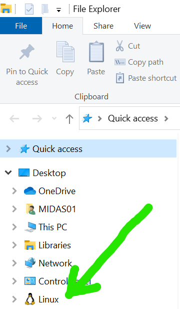

vignettes/getting-started.Rmd
getting-started.RmdComputer requirements
- A minimum of 16GB of memory is required. >=32GB is recommended.
- A minimum of 8 CPU cores. 16 are recommended.
- Administrative privileges are required on a Windows operating system to run linux.
- A linux/unix (includes Intel-based* MacOS) operating system is
required.
- *This software has not yet been tested on Apple’s M-chip based OS
- If you are using a Mac, go to Mac Getting Started
Install linux on a Windows 10/11 computer
You can get a full linux environment using Windows Subsystem for Linux, or WSL. The second version of WSL is WSL2 and is the recommended version to use.
Check your Windows version and build number, select Windows logo key + R, type winver, select OK.
-
Windows 10 version 2004 and higher (Build 19041 and higher) or Windows 11 is required.
- You can update to the latest Windows version by selecting Start > Settings > Windows Update > Check for updates.
-
Run the following command in Powershell:
wsl --install- if you see a message relating to Virtualization needing to be enabled, follow instructions below to access your machine’s BIOS setup:
Restart your computer
-
Reopen Powershell and enter the following commands:
wsl --set-default-version 2 wsl --install -d Ubuntu-18.04If either of these commands errors out, from the Windows search bar, open
Turn Windows Features on or offand make sure the following 4 features are checked off:- Hyper-V
- Virtual Machine Platform
- Windows Hypervisor Platform
- Windows Subsystem for Linux
Following successful installation, an Ubuntu terminal should pop up that looks like:

Enter a username that will be exclusive for WSL. Press
Enterand then enter a password. It is very important, to choose a memorable password. If you forget your password you will need to reinstall Ubuntu.
A “prompt” will then appear in the screen like:  with
with
nbx0 replaced by your entered username and
L349232 replaced with your computer’s name.
- Restart your computer.
- To access the Ubuntu terminal in the future, simply search for
Ubuntuin the Window’s task bar and click on the app.
Further details can be found on Microsoft’s website here: https://docs.microsoft.com/en-us/windows/wsl/install
Map network drive to be able to use Window’s File Explorer to see folders and files inside WSL
**Windows 11 and updated versions of Windows 10 should
automatically mount Linux. If you have “Linux” in your
File Explorer, you are good to go and do not need to
perform this step.

**Many computers have trouble with this step; the folders are not
selectable during this step. First, make sure that an Ubuntu terminal is
opened and then open the File Explorer. If “Ubuntu” is
still not showing up in File Explorer, you can try to find
the solution here: https://github.com/microsoft/WSL/issues/3996.
-
Open File Explorer
- If you have a Windows 10 or 11 OS, WSL is likely automatically mapped and visible in the left hand sidebar as “Ubuntu”
Right click This PC and click Map network drive
Enter
\\wsl$into Folder: and click Browse-
Click on
wsl$to unfold directories, selectUbuntu-18.04and click OK and thenFinish. You should now see your WSL “drive” available inFile Explorer:
Install Docker Desktop
Docker allows you to run software inside an isolated “container image” on your computer with all of that application’s needed dependencies. Make sure to install the version for your operating system.
If you get an error related to Docker user groups, go to “Edit local users and groups” from your Windows search bar Click Groups –> docker-users –> Add… –> then enter your username

Install Docker CLI (Command Line Interface) in WSL2
All following lines of code can be copy/pasted into your terminal.
Pasting using CTRL+V into a terminal my not
work. After copying a line of code, try pasting into the terminal with a
right click of your mouse or trackpad.
Open Ubuntu or Mac terminal
-
Uninstall old versions of Docker
sudo apt-get remove docker docker-engine docker.io containerd runc- If you have never installed Docker on your machine, you will see an error message about docker not being found. This is expected and you can move to step 3.
-
Tell WSL2 where to look for Docker CLI tools
sudo apt-get update sudo apt-get install ca-certificates curl gnupg lsb-release- During installation, you will be prompted multiple times to enter
‘y’ or ‘n’ on preceeding. Each time, input ‘y’ and click
Enter
sudo mkdir -p /etc/apt/keyrings curl -fsSL https://download.docker.com/linux/ubuntu/gpg | sudo gpg --dearmor -o /etc/apt/keyrings/docker.gpgecho \ "deb [arch=$(dpkg --print-architecture) signed-by=/etc/apt/keyrings/docker.gpg] https://download.docker.com/linux/ubuntu \ $(lsb_release -cs) stable" | sudo tee /etc/apt/sources.list.d/docker.list > /dev/null - During installation, you will be prompted multiple times to enter
‘y’ or ‘n’ on preceeding. Each time, input ‘y’ and click
-
Install Docker CLI
sudo apt-get updatesudo chmod a+r /etc/apt/keyrings/docker.gpg sudo apt-get updatesudo apt-get install docker-ce docker-ce-cli containerd.io docker-compose-plugin -
Verify successful installation
sudo docker run hello-world- This command downloads a test image and runs it in a container. When the container runs, it prints a confirmation message and exits.
- Whenever you enter the
sudocommand, you will be prompted for your WSL2 password. - If you get an error related to starting Docker, run the following command, then try to run hello-world again
sudo service docker start- If you get an error related to “Permission Denied” of docker.sock, run the following command, then try to run hello-world again
sudo chmod -755 /run/docker.sock- If you can now see the hello-world container in Docker Desktop, you can proceed to pulling and running iSpy containers
- If you open Docker Desktop and do not see the Hello World container you just ran, click Settings icon (top right) –> Resources –> WSL Integration
- Ensure that “Enable integration with my default WSL distro” is
checked off, and that Ubuntu-18.04 distro is switched on

- If your hello-world container still is not showing, open the Ubuntu-18.04 command prompt and run:
docker run -d -p 80:80 docker/getting-started